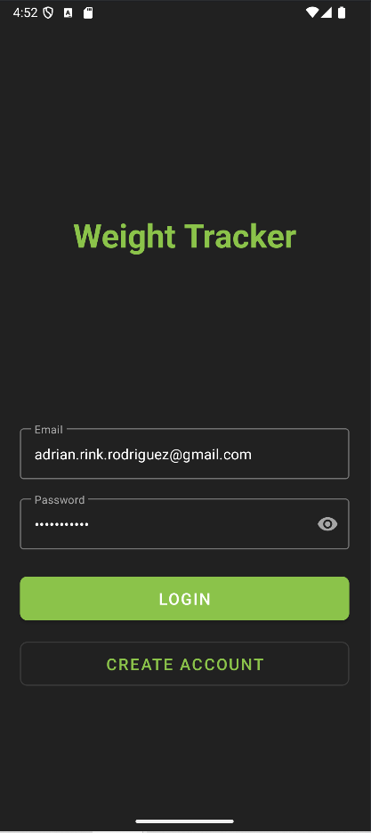
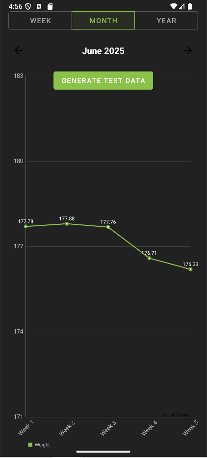

Professional Assessment
While I normally don’t like to talk about how my personal life impacts my coursework, reaching the end makes me appreciative of what I was able to accomplish. Along the way I believe I lost confidence in my potential as a developer, but it’s important to remind myself that I completed the challenges presented before me while managing work, a daughter and various roadblocks that came along the way. Thanks to these challenges, I am confident that I have grown over my time in the program, both in programming and life. The coursework allowed me time to struggle at foundational concepts necessary to feel comfortable working on software projects. A wide range of comp-sci courses allowed me to explore my love for research beyond development. These courses that had me implement complex solutions were accompanied by courses that made me stop and consider the implications of my actions in the development lifecycle. My program experience included many opportunities to collaborate with classmates and instructors alike. Actively participating in group projects and learning the essentials of using version control, will be an invaluable skill moving forward as I plan to get involved in online communities that develop open source projects, a long-time dream of mine. These situations not only taught me the tools for collaboration, but rounded out my communication skills in these settings. The comfortability I feel in consulting others for help is a result of learning how to prepare my questions with research. This gives me the feeling that there isn’t anything I’m incapable of solving eventually. Overall, the program experience gave me opportunities to prove my understanding of software practices, data structures and algorithms and security as a mindset. Coming from a background in networking and system admin, security concepts were always on my mind, but learning how to implement them in software was a significant challenge. Software practices feel obvious, yet they require that level of reinforcement to be truly appreciated. Finally, the work involving data structures and algorithms showed me how fun programming can be. It showed me the potential for my creativity to be harnessed, and for that I am truly grateful to the SNHU Comp-Sci program, and all the instructors who helped along the way. Using the WeightTracker Application and exploring the use of Firebase gives me a great launching point to continue growth on my ePortfolio. While I don’t feel it is completely ready now, I feel that I designed potential into every change that I made. As I move forward, I plan to use GitHub to consistently track feature updates for my application as I plan to expand it far beyond the current functionality. Hopefully, the migration of user authentication and data persistence to firebase services can highlight the foundational skills that I learned through my coursework. The data visualization elements have me excited to consider other creative ways for me to implement what I’ve learned from data structures and algorithm concepts.
Software Design: User Authentication with Firebase Auth
Figure 1: User Login Screen
I chose to use FirebaseAuth because of the immense potential it provides for my mobile application. My previous application could not truly be judged for its user authentication because it didn’t really have anything considerable. With FirebaseAuth I can explore the Firebase console to first learn about what features users might want for their accounts, then I can implement them quickly into my application.
The first step was to make my authentication method that could be called across the application to get the state of the user account. The potential exists in the ability to add security, sign-in providers, account personalization and utilize the extensive user management dashboard.
Algorithms & Data Structures: Visualizing User Progress
I chose to provide a data visualization element for the users to view their weight entries because of the potential it provides my application. The original application didn’t have any data manipulation to speak of, so this was a large improvement. The first step was to learn how to use MPAndroidChart, and prepare the data to be displayed on a line chart.
After creating methods that enabled me to add filters and time periods for the line chart, there still exists a great deal of potential in the additional health metrics we added to the program. These can be incorporated into the data visualization when I can decide on creative ways to correlate different metrics.
Figure 2: Main Data Display (Recycler View)
Database: Weekly, Monthly, and Yearly Trends
Figure 3: Month Filter Chart
The monthly chart provides a clear overview of fluctuations within a given month, allowing users to spot short-term trends.
The weekly chart offers a more granular view, enabling users to pinpoint specific days or weeks where their weight changed significantly, crucial for daily routine adjustments.
Figure 4: Week Filter Chart
Figure 5: Year Filter Chart
For long-term analysis, the yearly chart offers an aggregated perspective, invaluable for tracking progress towards long-term health goals and understanding annual patterns.
User Experience: Data Entry
Adding new weight entries is designed to be quick and intuitive. The first screen for data entry allows users to input their current weight and any optional notes. The interface is clean, reducing complexity and ensuring ease of use.
Validation ensures that only valid numerical inputs are accepted for weight, preventing common data entry errors.
Figure 6: Add Entry Screen
Figure 7: Date Picker for Entries
A crucial part of accurate weight tracking is associating each entry with the correct date. The integrated Date Picker provides a user-friendly component that allows users to easily select the date for their entry. This prevents manual input errors and streamlines the process.
The Date Picker is accessible and provides clear visual feedback, enhancing the overall user experience during data submission. Once both weight and date are confirmed, the new entry is seamlessly added to the user's records.
Databases: Robust Data Persistence with Firebase Firestore
I chose to transition to Firebase Firestore with the similar idea of future potential for my application. Switching from a local SQLite database to a cloud-based solution was much simpler than it should be. With Firestore I can learn more about NoSQL data modeling capabilities while I benefit from real-time synchronization. Similar to my FirebaseAuth, I modified my existing CRUD methods to leverage the Firestore services. I’m happy with this design choice, although it was easier than other methods, because of the Firestore dashboard and analytics I’m provided with. Also learning about the Firestore batch.write methods helped me to generate a year’s worth of user data to test out my newly implemented data visualization.
Conclusion & Future Potential
The Weight Tracker App provides a robust set of features for personal weight management. From secure authentication to intuitive data entry and comprehensive visualization tools, it aims to empower users in their health journey.
This project has significantly enhanced my understanding of Android development, software design patterns, algorithm implementation, and database management within a mobile context. I'm excited by the groundwork laid and the future possibilities for this application.